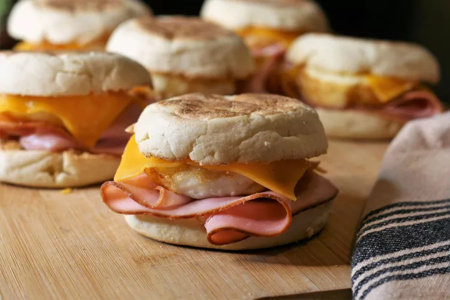

Homepage
Ham Egg and Cheese Sandwich

Quick and easy ham, egg, and cheese sandwich.
Ingredients
- 12 English muffins
- 1 Tbsp butter
- 12 large eggs
- 12 slices ham (heated)
- 12 slices cheddar cheese
Directions
- Preheat oven to 350 degrees F (175 degrees C). Split English muffins and lay on a sheet pan.
- Rub butter into each cavity of a 12-cup muffin tin, then crack an egg into each cavity. Break the yolks unless you want them runny.
- Place English muffins and eggs in preheated oven on separate racks. Toast muffins until golden brown, about 3 minutes, then remove. Bake eggs until set, 10 to 15 minutes.
- Lift eggs out of pan with a spatula and place on the English muffins. Top with ham and cheddar cheese. Serve hot.
- If you're not serving it right away, you can put it in the freezer and save it for later.